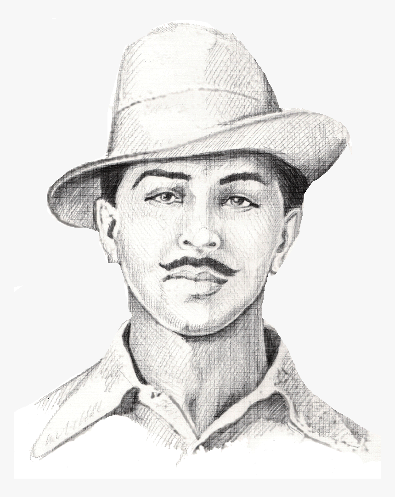

Shaheed Bhagat Singh
The great freedom fighter

Bombs and pistols do not make a revolution.
The sword of revolution is sharpened on
the
whetting-stone of ideas.
About Shaheed Bhagat Singh
- Born - September 1907 | Banga, Punjab, British India, (Present-day Punjab, Pakistan).
- Died - 23 March 1931 | Lahore, Punjab, British India, (Present-day Punjab, Pakistan).
- Cause of death - Execution by hanging.
- Movement - Indian Independence Movement.
- Criminal charge(s) - Murder of John Saunders.
- Criminal penalty - Capital Punishment.
- Criminal status - Executed.
Here's a time line of Shaheed Bhagat Singh's life:
- 1923 - Joined the National College in Lahore.
- 1924 - Became a member of the Hindustan Republican Association.
- 1928 - British set up the Simon Commission to report on the political situation in India. Lala Lajpat Rai, a prominent leader of HRA, Rai died of a heart attack. Enraged by his incident, Singh vowed to avenge Rai’s death and teamed up with other revolutionaries, Shivaram Rajguru, Sukhdev Thapar and Chandrashekhar Azad to make a plan to kill Scott.
- 1929 - Singh accompanied by Batukeshwar Dutt, threw two bombs into the Assembly chamber from its public gallery. Their intention was not to kill anyone but to gain publicity. After the explosion, the young men began shouting the slogan "Inquilab Zindabad!" ("Long Live the Revolution") and threw leaflets. Then they offered themselves for arrest.
- 1931 - Singh’s growing popularity bothered the British authorities greatly and the government decided to advance the start of the Saunders murder trial, which was henceforth called the Lahore Conspiracy Case. Singh, Rajguru and Sukhdev were Hanged in the Lahore jail on 23 March 1931 at 7:30 pm. Bhagat Singh was just 23 years old. The bodies were then secretly cremated outside Ganda Singh Wala village.
If you have time, you should read more about this incredible Indian socialist revolutionary on his Wikipedia entry.